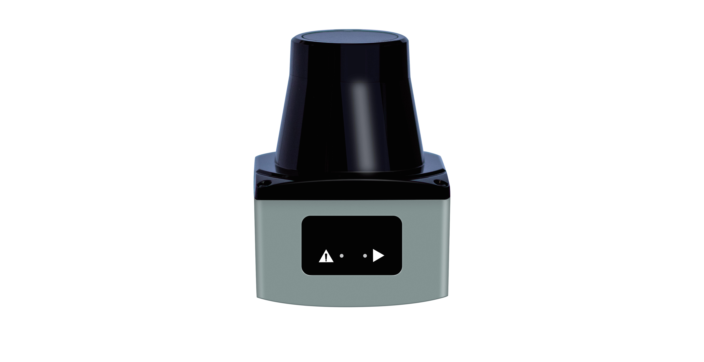

锐驰智光（北京）科技有限公司创立于2016年，是一家持续创新的激光传感器及解决方案供应商。 锐驰智光专注于研发更好的激光传感器产品和解决方案，为人工智能提供强大的感知能力和丰富的数据支持。 锐驰智光深入洞察激光传感技术在不同行业所面临的复杂挑战和多样需求，以集成芯片等专利技术为基础， 不断突破技术边界，开发了广泛应用于自动驾驶、智慧交通、机器人、工业自动化、测绘等领域的激光雷达 产品和创新解决方案，创造更多价值，助力行业发展。锐驰智光目前已服务数字绿土、新石器、行深智能、Momenta等超过500+企业。
1. 产品
1.1. 新产品介绍
1.1.1. Lorabeam
Lorabeam 系列由 Richbeam 团队研发的新款面向商业和工业领域的高性价比二维导航激光雷达。即将登场，第一发布信息请关注官网。
1.1.2. Korabeam
Korabeam 系列由 Richbeam 团队研发的新款面向工业领域的高性价比二维避障激光雷达。即将登场，第一发布信息请关注官网。
1.1.3. Metabeam16S/Metabeam32S
Metabeam16S以及Metabeam32S 是由 Richbeam 团队研发的新款面向工业领域的高性价比二维避障激光雷达。即将登场，第一发布信息请关注官网。
1.2. 其他产品介绍
1.2.1. 二维激光雷达
1.2.1.1. Lakibeam系列
Lakibeam 系列产品由 Richbeam 团队研发的首款面向商业和工业领域的高性价比二维导航激光雷达。
Lakibeam1
LakiBeam1是由锐驰智光基于脉冲飞行时间（pToF，pulsedTime of Flight）原理设计的小型化高性能激光雷达。探测距离可达25m，视场角为270°，角分辨率可达0.1°，点频最高为43.2k。详情请见： lakibeam1
Lakibeam1L
LakiBeam1是由锐驰智光基于脉冲飞行时间（pToF，pulsedTime of Flight）原理设计的小型化高性能激光雷达。探测距离可达40m，视场角为270°，角分辨率可达0.1°，点频最高为43.2k。详情请见： lakibeam1L
Lakibeam1S
LakiBeam1是由锐驰智光基于脉冲飞行时间（pToF，pulsedTime of Flight）原理设计的小型化高性能激光雷达。探测距离可达15m，视场角为270°，角分辨率可达0.2°，点频最高为18k。详情请见： lakibeam1S
1.2.2. 三维激光雷达
1.2.2.1. Metabeam系列
MetaBeam系列产品是由锐驰智光（北京）科技有限公司基于脉冲飞行时间（Time of Flight）原理设计的多线束高性能激光雷达。本产品主要面向机器人环境感知、地图测绘、工业过程监测、安防等领域。
Metabeam16
Metabeam16集成了16个激光收发模组，通过集成式激光收发模组快速旋转的同时发射激光束对外界环境进行持续性的扫描。探测距离可达80m，垂直视场角为31°，垂直角分辨率为2°。详情请见： Metabeam16
Metabeam32
Metabeam32集成了32个激光收发模组，通过集成式激光收发模组快速旋转的同时发射激光束对外界环境进行持续性的扫描。探测距离可达120m，垂直视场角为31°，垂直角分辨率为1°。详情请见： Metabeam32
Metabeam64
Metabeam64集成了64个激光收发模组，通过集成式激光收发模组快速旋转的同时发射激光束对外界环境进行持续性的扫描。探测距离可达260m，垂直视场角为31.5°，垂直角分辨率为0.5°。详情请见： Metabeam64
1.2.2.2. Lakibeam128
Lakibeam128是由锐驰智光（北京）科技有限公司基于脉冲飞行时间（Time of Flight）原理设计的多线束高性能激光雷达。本产品主要面向机器人环境感知、地图测绘、工业过程监测、安防等领域。探测距离可达 m，垂直视场角为25°，水平视场角为120°。 详情请见： Lakibeam128